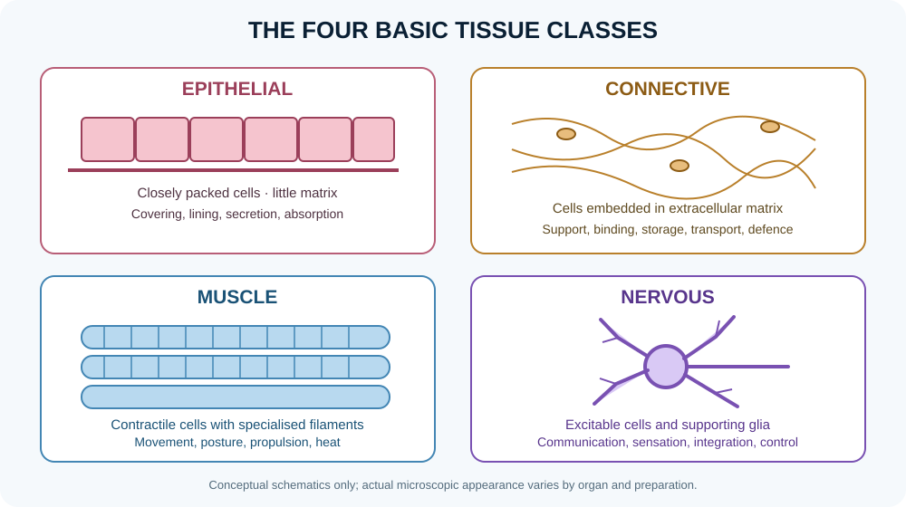

Introduction to microscopic anatomy and histological methods

Microscopic anatomy studies cells, tissues and the fine structure of organs. Histology commonly examines thin tissue sections using light microscopy, while electron microscopy reveals ultrastructure at much higher resolution. A slide is not a transparent copy of living tissue: fixation, processing, sectioning and staining can change dimensions and appearance, so interpretation requires knowledge of the method.
Learning objectives
- Explain the core concepts in this lesson.
- Identify key structures, relationships or mechanisms.
- Apply the concepts to a practical or clinical example.
High-yield study points
- Cytology focuses on cells; histology focuses on tissues and how cells and extracellular material are organised.
- Routine haematoxylin and eosin (H&E) staining usually makes nuclei blue-purple and much cytoplasm and extracellular proteins pink, but staining intensity depends on tissue and processing.
- Fixation helps preserve structure; dehydration and embedding prepare tissue for sectioning; stains increase contrast between components.
- A tissue section is a two-dimensional sample of a three-dimensional structure, so tubular organs, glands and vessels look different depending on the cutting plane.
- Light microscopy resolves cellular and tissue architecture; transmission electron microscopy reveals internal ultrastructure, while scanning electron microscopy emphasises surface topography.
- Recognise artefacts such as folds, tears, shrinkage, uneven staining and empty spaces introduced by processing.
- Interpret slides systematically: identify organ and overall architecture first, then tissue layers, cell types, lumens, connective tissue and specialised structures.
Clinical connection
Histological interpretation supports diagnosis, but a specimen's orientation, sampling site, preparation and clinical context all affect what can be concluded.